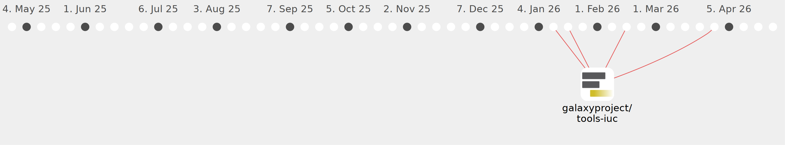

Galaxy Community Activities
BertBog
BertBog
https://github.com/BertBog
Commits all-time:
25
Commits last year:
24

galaxyproject/tools-iuc
(24)
82aedcd
23d01a1
4bf8b41
c0f39b5
168b485
59a8fd6
f723171
4ee0d4b
7e50fb9
ae05ccd
3eb8b15
20a13e6
d268537
a03c723
298c35b
9b7a74a
b6d4eda
ff84353
683d81f
82bd52c
57ee41c
51af01b
bab8ba1
808fe8f